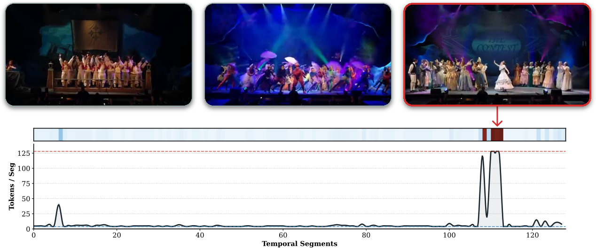
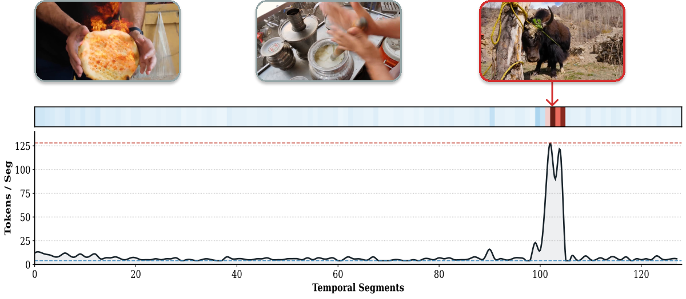
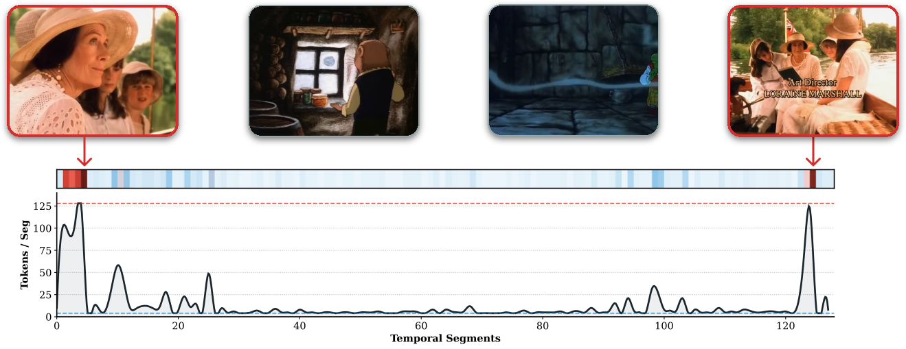
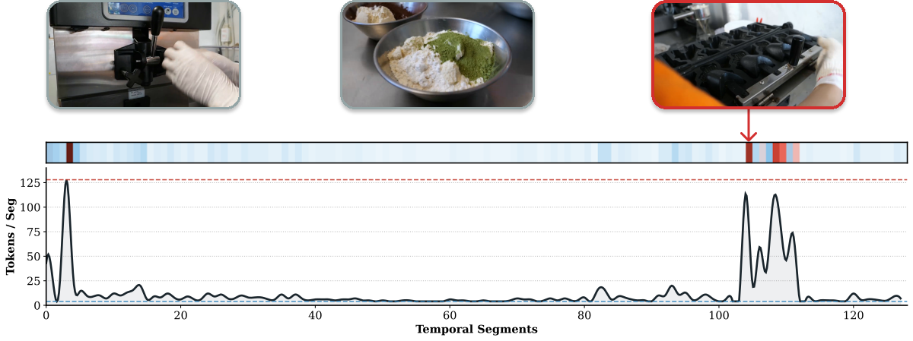
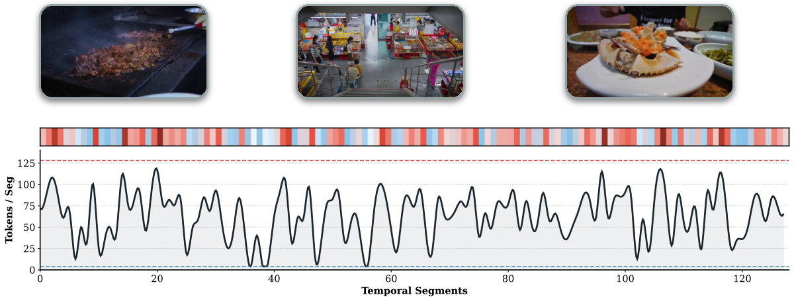

Abstract
Adapting Multimodal Large Language Models (MLLMs) for hour-long video understanding is severely bottlenecked by context window limits. Dense visual streams quickly saturate input token budgets and exacerbate the lost-in-the-middle phenomenon. Existing query-agnostic heuristics—such as sparse sampling or uniform pooling—blindly sacrifice fidelity. They frequently discard transient decisive moments, blur fine-grained evidence, and waste representational bandwidth on irrelevant backgrounds.
To resolve this, we introduce Tempo, an efficient, query-aware framework that natively learns to compress long videos for downstream understanding. As its name suggests, Tempo acts as an intelligent temporal compressor that dynamically distributes the rhythm of the video. It leverages a Small Vision-Language Model (SVLM) to perform an early cross-modal distillation process, generating compact, intent-aligned video representations in a single forward pass.
To enforce strict inference budgets without breaking causality, we propose Adaptive Token Allocation (ATA). Exploiting the SVLM's inherent zero-shot relevance prior and empirical semantic front-loading, ATA acts as a training-free, O(1) dynamic router. It allocates dense, high-fidelity bandwidth to query-critical semantic beats while rapidly fast-forwarding redundancies into minimal temporal anchors to maintain the global storyline.
Extensive experiments demonstrate that our compact 6B architecture achieves state-of-the-art performance with aggressive dynamic compression (0.5–16 tokens/frame). On the extreme-long LVBench (4101s), Tempo scores 52.3 under a strict 8K visual token budget, outperforming proprietary baselines such as GPT-4o and Gemini 1.5 Pro. Crucially, empirical profiling reveals that Tempo frequently compresses hour-long videos to token counts substantially below theoretical limits, proving that true long-form multimodal understanding is best achieved not by greedily padding expansive context windows, but through intent-driven, dynamic allocation based on semantic necessity.
Methodology: The Tempo Framework

Tempo resolves the structural mismatch between continuous visual streams and bounded LLM context windows by casting long video understanding as an end-to-end, query-aware cross-modal distillation process. Our framework consists of three core phases:
- The Local Compressor (Left): We uniformly partition the video into temporal segments. For each segment, a Small Vision-Language Model (SVLM) processes the visual frames alongside the user query. Under causal attention, a fixed number of learnable memory tokens inherently distill the preceding visual semantics, discarding query-irrelevant backgrounds early on.
- Inference-Only Bypass via ATA (Middle): To enforce strict global token budgets (e.g., 8K) during inference, we introduce Adaptive Token Allocation (ATA). In a single forward pass, ATA intercepts a zero-shot relevance score directly from the SVLM. It dynamically dictates an O(1) head truncation—allocating dense bandwidth to query-critical segments while aggressively compressing redundancies down to as few as 4 tokens for minimal temporal anchors.
-
The Global Decoder (Right): The compressed, highly filtered memory tokens are assembled into a sparse sequence using explicit temporal tags (e.g.,
<t=2.0s>). A large global LLM synthesizes this condensed multimodal context to generate the final, accurate response without suffering from attention dilution.
Video Demonstrations
Query:
Task: Please analyze the provided video and answer the following 7 questions precisely.
Q1: How many performers are visible on the stage?
Q2: Describe the architectural elements in the background. What historical civilization do they remind you of?
Q3: What is happening in the night sky above the performers, and what does this suggest about the event?
Q4: List the hair colors of the performers in order from left to right.
Q5: Identify the specific musical instrument being played by the performer located on the far left of the stage.
Q6: What is the specific time interval (in seconds, e.g., XX-XXs) during which this fireworks performance scene occurs in the video?
Q7: Look at the audience in the foreground. How does their silhouette-like depiction affect the viewer's perspective of the stage?
Q2: The architectural elements in the background resemble ancient Greek columns, suggesting a historical setting reminiscent of ancient Greece.
Q3: The night sky above the performers is filled with fireworks, suggesting a celebratory event or performance.
Q4: The hair colors of the performers from left to right are purple, pink, blonde, and blue.
Q5: The performer on the far left is playing a harp.
Q6: The fireworks performance scene occurs between 88.0-91.0 seconds.
Q7: The silhouette-like depiction of the audience in the foreground creates a sense of depth and focus on the performers on stage, enhancing the viewer's perspective of the stage.
Query:
Describe the video in detail.
Query:
Task: Please examine the provided media and answer the following three questions regarding the specific puppy in the scene:
Q1: What is the primary fur color of the puppy positioned on the swing?
Q2: Specify the exact time interval (in seconds, e.g., XX-XXs) during which the puppy is seen sitting on the swing.
Q3: Provide a brief description of the puppy's appearance and its surroundings.
Q2: The puppy is seen sitting on the swing from 175.0 - 180.0 seconds.
Q3: The puppy has pink fur and is sitting on a swing in a serene setting with a tree and a body of water in the background.
Query:
What text appears in the center of the video behind a sea of pink flowers?
Query:
What colors are the clothes worn by the two announcers in the studio?
Query:
What was the purpose of using a hammer to hit the car in the video?
A. To show the hammer works well.
B. To show the solidity of the car.
C. To warn people not to hit cars with hammers.
D. To illustrate that a hammer is harder than a bullet.
Query:
Which year was the game held?
Query:
In line with the video evidence, why does the orange stickman want to destroy the Minecraft world?
A. He wants to save his son.
B. He is too sad.
C. He loses his son.
D. He does like the world.
Query:
Where are the woman and children when they first appear in the video?
Qualitative Analysis: Visualizing Intent-Driven Sparsity
To demonstrate how Tempo dynamically allocates token bandwidth, we visualize the zero-shot relevance scores alongside the generated memory tokens. Tempo natively assigns dense anchors to query-critical moments while aggressively compressing redundant backgrounds.

Query: What words are written in the background for an event that involves a group of princesses or royal girls?
Prediction: (A) The contest ✔
Tempo Analysis: Tempo acts as an efficient search engine, bypassing earlier irrelevant theatrical scenes to pinpoint the exact frames near the end containing the target text.

Query: What are the people holding the yellow ropes trying to do at the place that has trees with blooms?
Prediction: (D) They are trying to lasso the yak ✔
Tempo Analysis: Notice the sharp token allocation spike. Tempo successfully suppresses the irrelevant background and allocates maximum bandwidth strictly to the moment the action occurs.

Query: Where are the woman and children when they first appear in the video?
Prediction: (C) The boat ✔
Tempo Analysis: Tempo effectively grounds the visual concept of the characters, allocating dense bandwidth to their appearances at both the beginning and the end of the video. This comprehensive filtering provides the global LLM with all necessary evidence to accurately deduce the "first" location while compressing the irrelevant middle segments.

Query: What is the maximum number of Taiyaki can the machine cook at the same time?
Prediction: (C) 4 ✔
Tempo Analysis: Driven by the semantics of "machine" and "cook", Tempo strategically allocates bandwidth to relevant equipment throughout the timeline—capturing both the initial preparation machinery and the final cooking mold. This ensures the LLM receives the exact visual context required to count the capacity.

Query: What is the category of this video?
Prediction: (A) A vlog of all kinds of food around Korea ✔
Tempo Analysis: For this global understanding task, the graph reveals Tempo automatically transitioning from sparse anchoring to a dense, continuous token distribution across the entire video.
Quantitative Results
Comparison with state-of-the-art MLLMs on long video benchmarks, highlighting Tempo's superior accuracy and extreme token efficiency. Notably, while we set a theoretical dynamic range of 0.5–16 tokens, empirical profiling reveals that Tempo inherently operates substantially below the maximum budget limits in practice (shown in gray rows).
| Model | Size | Tokens / Frame | LongVideoBench (473s) |
MLVU (651s) |
Video-MME (Overall) (1010s) |
Video-MME (Long) (2386s) |
LVBench (4101s) |
|---|---|---|---|---|---|---|---|
| Proprietary Models | |||||||
| GPT-4o | - | - | 66.7 | 64.6 | 71.9 | 65.3 | 30.8 |
| Gemini 1.5 Pro | - | - | 64.0 | - | 75.0 | 67.4 | 33.1 |
| General Open-Source MLLMs | |||||||
| VideoChat2-HD | 7B | 72 | - | 47.9 | 45.3 | 39.8 | - |
| LLaVA-OneVision | 7B | 196 | 56.4 | 64.7 | 58.2 | - | - |
| LLaVA-Video | 7B | 676 | 58.2 | 70.8 | 63.3 | - | - |
| VideoLLaMA3* | 7B | ≤ 91 | 59.8 | 73.0 | 66.2 | 54.9 | 45.3 |
| InternVL3.5 | 8B | 256 | 62.1 | 70.2 | 66.0 | - | - |
| Molmo2 | 8B | 83 | 67.5 | - | 69.9 | - | 52.8 |
| Qwen2.5-VL | 7B | 1924 | 56.0 | 70.2 | 65.1 | - | 45.3 |
| Qwen3-VL* | 2B | ≤ 640 | - | 68.3 | 61.9 | - | 47.4 |
| Qwen3-VL* | 8B | ≤ 640 | - | 78.1 | 71.4 | - | 58.0 |
| Specialized Long Video MLLMs | |||||||
| LLaMA-VID | 7B | 2 | - | 33.2 | 25.9 | - | 23.9 (13B) |
| LongVA | 7B | 144 | - | 56.3 | 52.6 | 46.2 | - |
| Kangaroo | 8B | 256 | 54.8 | 61.0 | 56.0 | 46.7 | 39.4 |
| LongLLaVA | A13B | 144 | 53.5 | - | 53.8 | 46.4 | - |
| LongVILA | 7B | 196 | 57.1 | - | 60.1 | 47.0 | - |
| LongVU | 7B | 64 | - | 65.4 | 60.6 | 59.5 | - |
| Storm | 7B | 64 | 60.5 | 72.9 | 63.4 | 53.4 | - |
| BIMBA | 7B | 36 | 59.5 | 71.4 | 64.7 | - | - |
| VideoChat-Flash | 7B | 16 | 64.7 | 74.7 | 65.3 | 55.4 | 48.2 |
| Tempo* (4K Budget) | 6B | 0.5–16 | 64.5 | 75.6 | 67.8 | 57.8 | 52.7 |
| ↳ actual avg. toks/frame | 2.8 | 2.8 | 3.6 | 3.4 | 2.9 | ||
| Tempo* (8K Budget) | 6B | 0.5–16 | 65.1 | 75.2 | 67.7 | 57.0 | 52.3 |
| ↳ actual avg. toks/frame | 3.1 | 3.3 | 4.3 | 4.1 | 3.5 | ||
BibTeX
If you find our work useful for your research and applications, please consider citing our paper:
@article{fei2026tempo,
title = {Small Vision-Language Models are Smart Compressors for Long Video Understanding},
author = {Fei, Junjie and Chen, Jun and Liu, Zechun and Xiong, Yunyang and Zhou, Chong and Wen, Wei and Han, Junlin and Zhuge, Mingchen and Suri, Saksham and Qian, Qi and Liu, Shuming and Wu, Lemeng and Krishnamoorthi, Raghuraman and Chandra, Vikas and Elhoseiny, Mohamed and Zhu, Chenchen},
journal = {arXiv preprint},
year = {2026},
}Acknowledgements
Junjie Fei, Mingchen Zhuge, Shuming Liu, and Mohamed Elhoseiny were supported by funding from the King Abdullah University of Science and Technology (KAUST) Center of Excellence for Generative AI.
We extend our sincere gratitude to the authors of LVBench, Video-MME, MLVU, and LongVideoBench for providing the invaluable long-video evaluation benchmarks that made this research possible.
Our codebase is built upon the excellent foundations of LongVU, VideoChat-Flash, LLaVA, and Qwen3-VL. Furthermore, our models are initialized using the powerful pre-trained weights from Qwen3-VL and Qwen3-LM. We also thank the Nerfies team for open-sourcing their beautiful project page template.
License & Disclaimer
Framework & Weights: The Tempo framework's source code is open-sourced under the Apache-2.0 License to foster the research and development of community. However, the pre-trained model weights and checkpoints are distributed strictly for academic and non-commercial research purposes. Any commercial use is explicitly prohibited without prior written consent.
Video & Data Assets: All visual media, including video clips and images showcased on this project page and within our evaluation pipelines, are utilized under the doctrine of Fair Use exclusively for non-profit academic research and scientific illustration. We claim no ownership over the original, copyrighted media assets.
Take-down Notice: We deeply respect the intellectual property rights of creators. If you are a copyright holder and believe that any content hosted here infringes upon your rights, please contact us at junjiefei@outlook.com or open an issue on our GitHub repository. We will promptly investigate and remove the identified content upon verification.